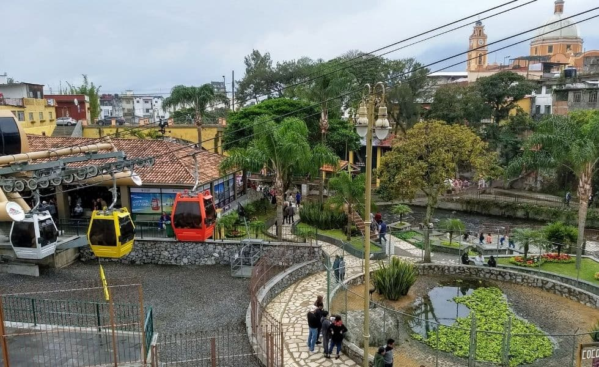
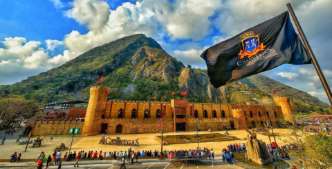
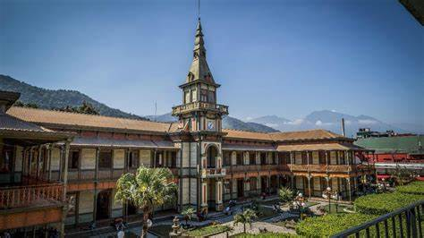
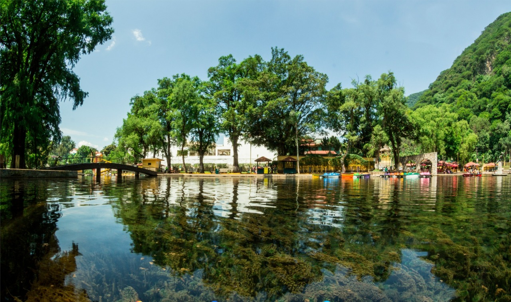
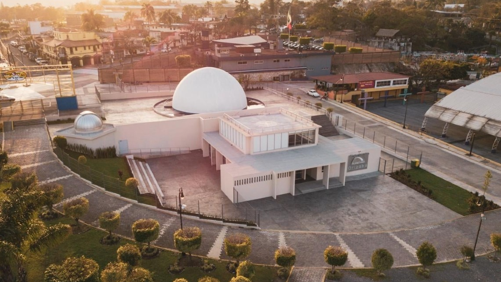
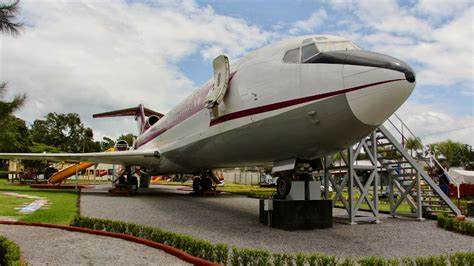

Adentrate en la hermosa ciudad de Orizaba
¿Porque es una buena opción para vacacionar?
Conocida por su belleza natural, su arquitectura colonial y su historia.
Se encuentra a los pies del Pico de Orizaba, la montaña más alta de
México. Su clima es templado y húmedo, con abundante vegetación.
Entre sus atractivos destacan el Palacio de Hierro, diseñado por Gustave Eiffel,
el teleférico que ofrece vistas panorámicas de la ciudad y el río Orizaba,
que atraviesa el centro con senderos y puentes pintorescos.
Orizaba también tiene una rica tradición cultural y
gastronómica, con platillos típicos como el chileatole y los
tamales rancheros.
Cosas para ver






Orizaba un pueblo lleno de magia
Imaginate recorrer las coloridas calles de Orizaba, rodearte de su bella cultura e impresionante historia.
Desplazarte por el teleférico, subir el cerro del borrego o visitar el pico de Orizaba, darte un chapuzón en
ojo de agua o visitar la gran cantidad de museos distribuidos por el pueblo.